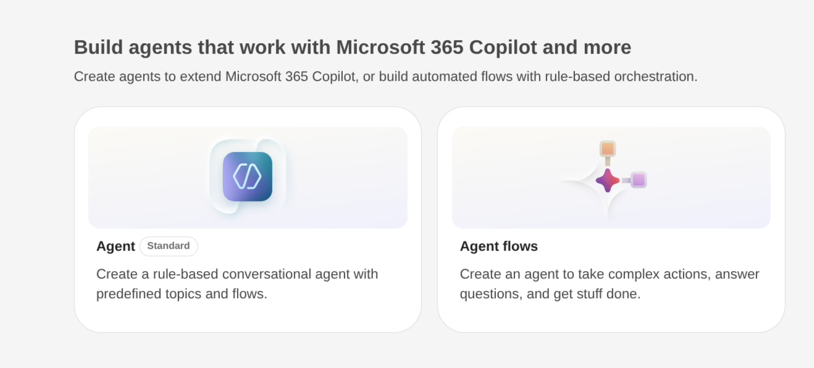
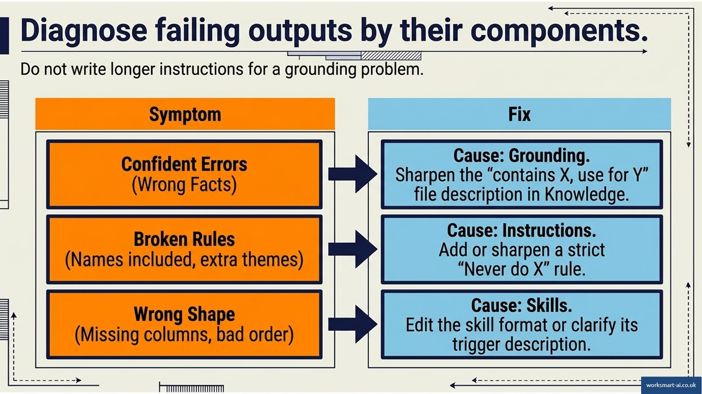

Module 4: Build and test the agent
Module 4: Build and test the agent
Estimated time: 9-10 minutes, plus about 20 minutes to build and test
Goal: Build your planned agent in Copilot Studio and test it.
Test before it’s trusted
A well-formatted report isn’t necessarily correct. The only way to know is to run it on a case where the right answer is already known and compare.
Sandbox first
Build and test with dummy data in test folders. Keep live data out until the agent has passed its tests.
Dummy data does two jobs. It keeps personal and sensitive information out of test conversations while the agent is still unreliable. And it can be built to contain the difficult cases on purpose, so every test has an answer to check against. Live data only holds whatever cases this week happened to produce.
The NSS workbook from Module 1 is dummy data of this kind.
For your own agent, a small dummy set is enough: a copy of the document with names changed, and one or two rows edited to create the case most likely to go wrong. For the actions tracker, that’s an action with no due date.
Live data is fine for testing, as long as the agent only reads it and doesn’t change anything.
Before you build: Choose the harness
Copilot Studio builds agents on two different foundations, which Microsoft calls harnesses. The one used throughout this course is the GitHub Copilot harness, the default when the New experience is switched on. The older standard harness is still available.
Feature | GitHub Copilot harness | Standard harness |
|---|---|---|
Skills | Supported | Not supported. Format goes in the instructions |
Memory | Supported, in preview | Not supported |
A spreadsheet in knowledge | Opened and counted | Split into chunks and searched |
The last row matters for any job built on counts. Searching chunks is right for finding the relevant paragraph in a policy, and wrong for counting how many of 64 students mentioned assessment. An agent can’t be moved between harnesses, so choose before building.

The Copilot Studio start screen. Agent and Workflow both build on the GitHub Copilot harness.

Other ways to build in Copilot Studio: a standard-harness agent, or an agent flow.
Credits and costs
Agents run on Copilot Credits, which come with the University’s subscription. The two harnesses meter them differently:
- On the GitHub Copilot harness, building, testing, and running all use credits, from the first test.
- On the standard harness, building and testing are free, and credits are used once the agent or flow is published and running.
Credits are a shared budget. Check the current position with IT before building anything that will run often, and plan the build so testing happens on small, dummy files.
Build it: From plan to Copilot Studio
The planning template follows Copilot Studio’s order, so the build copies the plan across field by field.
- Open Copilot Studio and sign in with your work account. Check that the New experience is on, which gives the GitHub Copilot harness described above.
- Create the agent and name it. Set the language and any solution settings before the first save, as some settings lock once saved.
- Paste the purpose into the description. Copilot reads it to decide when the agent applies.
- Paste the instructions from the plan.
- Add each knowledge source, and give each a name and a description in the form “contains X, use for Y”. Copilot reads these descriptions to decide which source to reach for. For the NSS agent, last year’s report is described as “use only for the year-on-year comparison”.
- Add the skill, uploaded as a file, with a description that says exactly which output it shapes.
- Add tools, or leave them empty if the plan says “none”.
- Set authentication to Authenticate with Microsoft, so the agent runs as the signed-in person and reaches only what they can.
- Test in the test pane, against the test set below.
The finished NSS agent in Module 2 shows what the build looks like once every field is filled.
The plan’s trigger isn’t set here. An agent on its own runs when someone asks it something. A schedule or a file arriving starts a workflow, which then calls the agent, and Module 6 sets that up. While you test, you’re the trigger: each run starts from the test pane.
Don’t publish or share it yet. Sharing follows the category from Module 3: an agent for a team goes through the use case suggestion form first.
Your turn: Build your planned agent now, on your own profile, using dummy files in a test folder. Follow the nine steps and stop at the test pane. Each test run uses Copilot Credits, so keep the test files small.
A test set: Answers you already know
A test set is a short list of requests, each with the result a correct run produces. Three to five cases is enough to start, provided they include the ways the agent is most likely to fail.
The NSS writer’s test set comes straight from the traps built into the workbook:
Test | A correct run produces |
|---|---|
Theme the 64 responses | Four themes and no fifth, despite last year’s report carrying “student voice” |
Comments naming staff | A count of four, and no name anywhere in the report |
Access needs | Three comments reproduced in full in their own section, counted in no theme |
A small theme | Learning resources reported as 2 and below the reporting threshold, not summarised |
A question not asked | No overall satisfaction score, as that question isn’t asked of providers in England |
The recommendations | The section present and empty, for the programme lead to write |
Two of these are cases where the right answer is “nothing”: no name, no score. Those are the easiest to miss, because a report that invents a figure looks just as finished as one that doesn’t.
Each of the four Strategy Office jobs has its own trap to test:
- Meeting actions tracker: an action with no due date, which should be reported as having no date, not as overdue.
- Scope and milestone extractor: a milestone the business case doesn’t mention, which should come back as “not in the business case”.
- Admission cycle monitor: a week where the cycle point and the calendar week differ, where the agent should state which week it compared.
- Planning submission checker: a section with a heading and boilerplate beneath it, which should be marked present but unanswered.
Diagnosing a weak output
When a test fails, the fix depends on which part of the agent caused it. Most failures are one of three kinds, and each maps to a part from Module 2.
Symptom | Likely cause | Where the fix goes |
|---|---|---|
Figures or content that aren’t in this year’s file, or generic content that could describe any programme | Grounding | Knowledge: attach the right source, sharpen its “contains X, use for Y” description, or remove a source that misleads |
The right material, but a rule broken: a name included, a fifth theme added, a reason offered | Instructions | Instructions: add or sharpen the “never” rule |
The right content and rules, in the wrong shape: sections out of order, missing columns | Skills | Skill: fix the format, or its description if the skill isn’t loading |

Diagnosing a failed test: each symptom points to grounding, instructions, or skills.
Grounding problems are the ones most often mistaken for something else. A weak answer tempts a longer set of instructions, when the real problem is that the agent read the wrong document, or didn’t read the right one.
Change one thing at a time, then rerun the whole test set. A fix to one case can break another.
In testing, the NSS agent’s report shows this year’s positivity figures exactly matching last year’s signed report, not this year’s workbook. What kind of problem is it?